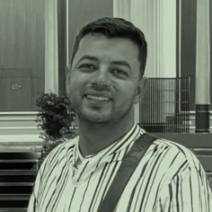
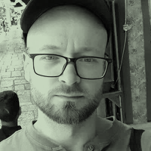

At the heart of Eed-b-Eed is the family collective of five siblings from al-Khalil (Hebron). These are four sisters – A. Hroub, B. Hroub, R. Hroub, and S. Hroub – and their brother Ahmad Hroub.
They originate from rural al-Khalil, and currently live across the Bethlehem and al-Khalil regions. Proud speakers of Khalili Arabic in its rural form, they are passionate about making their language thrive, amidst the linguistic pressures related to urbanisation, electronic communication, and AI, all of which lead to the gradual disappearance of local language varieties, and, subsequently, of the cultural traditions they carry.
All five siblings hold degrees from Palestinian universities, including Birzeit University, in fields including Arabic language and Literature, Law, and Economics.
Read moreEed-b-Eed is academically coordinated by Dr Jakub Zbrzezny, lecturer in the School of Divinity, History, Philosophy and Art History at the University of Aberdeen in Scotland.
Originally from Poland, Jakub completed Interdisciplinary Individual Studies in the Humanities at the University of Warsaw, and later gained a PhD in Divinity at the University of Aberdeen. In his doctoral research he investigated correlations between early textual traditions of the Jewish, Christian, and Muslim Scriptures. In his current research, he explores how the traditional knowledge and cultural intuitions of rural Arab communities in Palestine can shed new light on ancient biblical traditions associated with the region.
Jakub’s long-standing passion for the Scriptures led him first to Latin and Greek, then to Hebrew and Syriac, and ultimately to Arabic, in both its ancient and modern manifestations. Thanks to the linguistic hospitality of Ahmad Hroub, Jakub speaks Khalili Arabic and is passionate about its study. He strongly believes that the study of the “Holy Land” in antiquity should be attentive to the lives of its modern inhabitants across Israel and Palestine, Jews and Arabs alike.